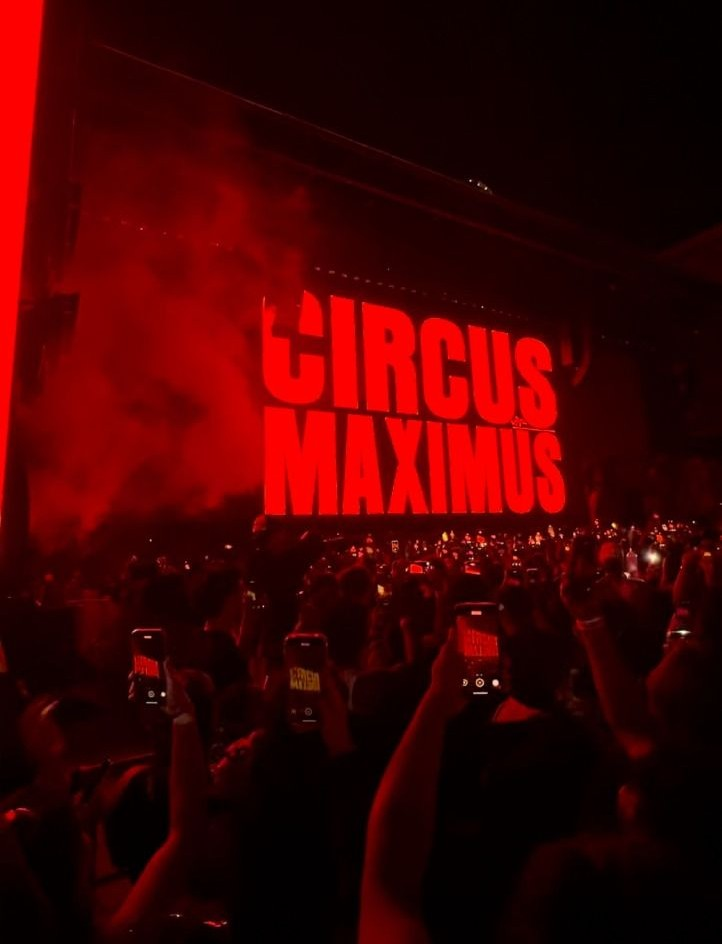
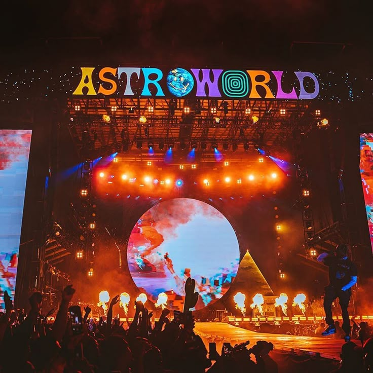

Турнета на Травис Скот
2023–2025: Circus Maximus Tour

- Албум:Utopia (2023)
- Период: 11 октомври 2023 – 8 ноември 2025
- Континенти: Северна Америка, Европа, Азия, Африка, Южна Америка, Океания
- Брой концерти: 84
- Посетители:1.7 милиона
- Приходи: $209.3 милиона USD
- Съпътстващи артисти: Teezo Touchdown, Don Toliver, Sheck Wes, Veeze, Skilla Baby, Babyface Ray, Yung Lean, Pablo Chill-E, Lomiiel
Основни дати:
- 11 октомври 2023: Шарлът, САЩ – Spectrum Center
- 16 юли 2024: Хамбург, Германия – Barclays Arena
- 20 юли 2024: Кьолн, Германия – RheinEnergieStadion
- 27 юли 2024: Франкфурт, Германия – Deutsche Bank Park
- 11 октомври 2025: Йоханесбург, Южна Африка – FNB Stadium
- 18 октомври 2025: Делхи, Индия – Jawaharlal Nehru Stadium
- 25 октомври 2025: Сеул, Южна Корея – Goyang Stadium
- 1 ноември 2025: Саня, Китай – Sanya Stadium
- 8 ноември 2025: Токио, Япония – Belluna Dome
2018–2019: Astroworld – Wish You Were Here Tour

- Албум:Astroworld (2018)
- Период: 8 ноември 2018 – 16 юли 2019
- Континенти: Северна Америка, Европа
- Брой концерти: 57
- Съпътстващи артисти: Sheck Wes, Trippie Redd, Gunna, Virgil Abloh, Octavian
Основни дати:
- 8 ноември 2018: Балтимор, САЩ – CFG Bank Arena
- 2 март 2019: Ню Йорк, САЩ – Madison Square Garden
- 3 март 2019: Бруклин, САЩ – Barclays Center
- 16 юли 2019: Лондон, Великобритания – O2 Arena